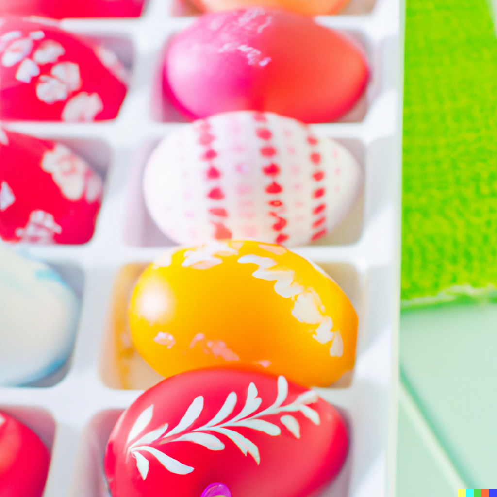
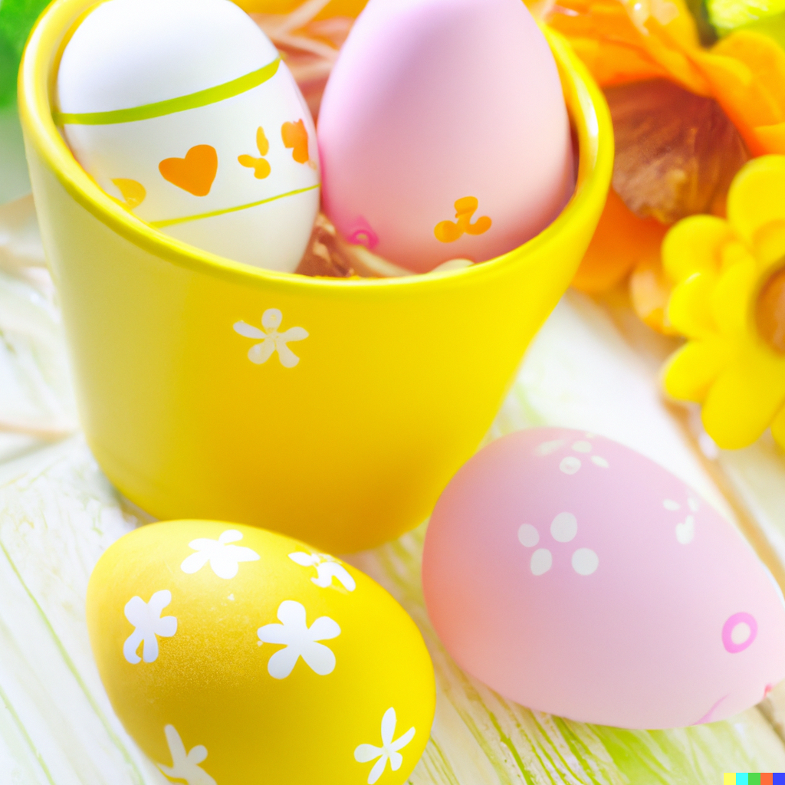

Paștele este una dintre cele mai importante sărbători ale creștinilor, în care se sărbătorește învierea
Domnului. Această sărbătoare este asociată simbolic cu venirea primăverii și trezirea naturii la viață și se
celebrează încă din secolul al XV-lea în preajma echinocțiului de primăvară. Originea cuvântului "Paște" este
evreiască și însemna trecere - trecerea evreilor peste Marea Roșie către tărâmul făgăduinței, dar și trecerea la
un nou sezon, către un nou început. Unul dintre cele mai cunoscute obiceiuri de Paște este cel al vopsirii
ouălor în culoarea roșie, care se face în Joia Mare. În zilele noastre, sunt folosite și alte culori, iar
culoarea roșie reprezintă sângele Mântuitorului în cele mai multe mituri care explică acest obicei. În Europa de
Est și în țara noastră, a fost dezvoltat de-a lungul timpului frumosul și elaboratul obicei al încondeierii
ouălor de Paște - adică trasarea diverselor modele complexe pe suprafața ouălor după ce acestea au fost vopsite.
Se spune că ouăle decorate protejează casa și pe cei care locuiesc în ea de ghinion.
|  |  |
|
| Anul | Data Paștelui (calendar gregorian) |
|---|---|
| 2000 | 23 aprilie |
| 2001 | 15 aprilie |
| 2002 | 31 martie |
| 2003 | 27 aprilie |
| 2004 | 11 aprilie |
| 2005 | 1 mai |
| 2006 | 23 aprilie |
| 2007 | 8 aprilie |
| 2008 | 27 aprilie |
| 2009 | 19 aprilie |
| 2010 | 4 aprilie |
| 2011 | 24 aprilie |
| 2012 | 15 aprilie |
| 2013 | 5 mai |
| 2014 | 20 aprilie |
| 2015 | 12 aprilie |
| 2016 | 1 mai |
| 2017 | 16 aprilie |
| 2018 | 8 aprilie |
| 2019 | 28 aprilie |
| 2020 | 19 aprilie |
| 2021 | 2 mai |
| 2022 | 24 aprilie |
| 2023 | 16 aprilie |
| 2024 | 5 mai |
| 2025 | 20 aprilie |
Paștile reprezintă una dintre cele mai importante sărbători anuale creștine, care comemorează evenimentul
fundamental al creștinismului, Învierea lui Iisus Hristos, considerat Fiul lui Dumnezeu în religiile creștine,
în a treia zi după răstignirea Sa din Vinerea Mare. Data de început a Paștilor marchează începutul anului
ecleziastic creștin. Există unele culte creștine care nu sărbătoresc Paștile.
Paștile creștine au o durată de 40 de zile, cuprinse între sărbătoarea Învierii Domnului (prima duminică de
Paști) și sărbătoarea Înălțării Domnului, care se celebrează la 40 de zile de la Înviere, într-o zi de joi.
Primele 3 din cele 40 de zile pascale sunt zile de mare sărbătoare.
Sărbătoarea Paștilor este precedată de o lungă perioadă de post, în care se comemorează evenimentele
premergătoare Învierii Domnului. Ultima săptămână din Postul Mare, numită Săptămâna Patimilor, începe în
Duminica Floriilor, când se sărbătorește intrarea în Ierusalim a lui Isus Hristos și se sfârșește în Sâmbăta
Mare. Este săptămâna în care sunt comemorate patimile lui Iisus, răstignirea și moartea Sa din Vinerea Mare.
Pesah (Paștele evreiesc) este o sărbătoare religioasă celebrată de evrei în amintirea eliberării din robia
egipteană și ieșirii lor din Egipt (Exodul), sub conducerea lui Moise..
Paștele se celebrează timp de opt zile, în perioada 15-22 Nisan în Israel. Dintre acestea primele și ultimele
două zile, la evreii din Diaspora impun respectarea strictă a regulilor religioase asemănătoare cu cele ale
Sâmbetei. La evreii din Israel acest lucru se aplică numai în prima și ultima zi de Pesah.
Intrarea evreilor în Pesah este marcată printr-o cină rituală, cina pascală numită Seder (in ebraică - „ordine”)
cu un tipic deosebit, cu prilejul căreia comesenii citesc cartea Hagadá centrată pe dezbaterea semnificației
ieșirii evreilor din robia egipteană, așa cum este ea relatată în Biblie. Această cină rituală a fost la vremea
ei sărbătorită și de Isus, apostoli și primii creștini.
| Luna ebraică | Durata (în zile) |
Perioada din calendarul gregorian |
|---|---|---|
| Nisan | 30 | martie-aprilie |
| Iyar | 29 | aprilie-mai |
| Sivan | 30 | mai-iunie |
| Tammuz | 29 | iunie-iulie |
| Av | 30 | iulie-august |
| Elul | 29 | august-septembrie |
| Tișri | 30 | septembrie-octombrie |
| Heșvan | 29 sau 30 | octombrie-noiembrie |
| Kislev | 30 sau 29 | noiembrie-decembrie |
| Tevet | 29 | decembrie-ianuarie |
| Șevat | 30 | ianuarie-februarie |
| Adar | 29 sau 30 | februarie-martie |
| Adar II | 29 | martie-aprilie |